Routing Path Update#
基本資訊
程式語言: C
程式網址: https://onlinegdb.com/9OJzYnfzL
製作時長: 2 周
作者: Hutaki Hare
題目簡介#
給定n個節點，並輸入舊的與要更新至的新的 routing path，將舊的path在不造成drop、cycle一步一步更新至新的path，且傳輸順序不可亂掉。
運作方式#
1.開始: 輸入n、新舊路徑#
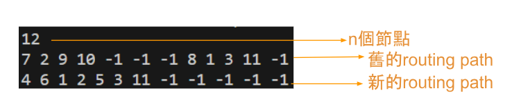
舊的路徑
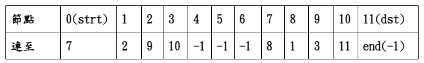
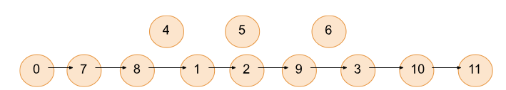
新的路徑
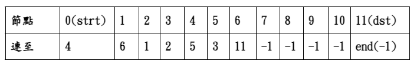
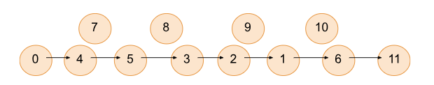
scanf("%d",&n); //scan node num
linked_list strt_arr[n],result_arr[n];
for(int i=0;i<n;i++){
scanf("%d",&num);
strt_arr[i].node=i;
strt_arr[i].num=num;
}
for(int j=0;j<n;j++){ //store all in arr sequently
scanf("%d",&num);
result_arr[j].node=j;
result_arr[j].num=num;
}
2. 過程#
用stack的方式儲存兩個routing path
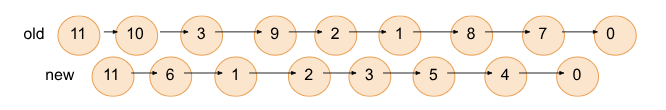
for(int t=0;t!=-1;){ // put the used nodes in linked list in stack (LIFO)
strt=add_to_list_normal(strt_arr[t].num,t,strt);
t=strt_arr[t].num;
}
for(int t=0;t!=-1;){ // put the used nodes in linked list in stack
result=add_to_list_normal(result_arr[t].num,t,result);
t=result_arr[t].num;
}
Cell In[1], line 1
for(int t=0;t!=-1;){ // put the used nodes in linked list in stack (LIFO)
^
SyntaxError: invalid syntax. Perhaps you forgot a comma?
先算一次更新次數，並印出，再一條一條印出更新過程
int count_fin(linked_list *strt,linked_list *result,linked_list *result_arr,linked_list *tmp_strt_arr,int n){ //count num of steps
linked_list *tmp_re=result,*tmp_strt=strt,strt_arr[n];
int count=1,non_used_assigned=0; // "count" count the num of steps
for(int i=0;i<n;i++){
...
if((strt_arr[i].num==-1)&&(result_arr[i].num!=-1)){ //if have non used nodes, and what their next is not -1
non_used_assigned=1; //count+=1 (update once assigning all node to -1)
strt_arr[i].num=result_arr[i].num; //assign all non used nodes to their right next node
}
}
count+=non_used_assigned; //count+=0 if no non used nodes that need
while(1){
int non_release_need_count=0; //count if need to do releasing nodes
if(strt_arr[tmp_re->node].num!=tmp_re->num){ //due to stack,start with the destiny node, if dif go in loop
count++; // 1.connection
//connect now directly to the next node it should have (count+=1)
if(tmp_strt->node!=tmp_re->node){ //if have non used nodes after the connection
//from the strt list start, to the node working on now
//if any of the release nodes shouldn't point to -1
//if need to do update
tmp_strt=tmp_store_tmp_strt; //assign back to tmp_strt was
if(non_release_need_count){ //if need to do updating
//assign the right next node
count+=(non_release_need_count);// 2.update non used nodes
}
}
}
if(tmp_re->node==0){ //if now is start node break out
bool all_same=true;
for(int i=0;i<n;i++){ //see if not yet all node well assigned
if(strt_arr[i].num!=result_arr[i].num){
all_same=false;
break;
}
}
if(!all_same){ //if not update once to all same
count++;
}
break;
}
tmp_re=tmp_re->next; //go to next (the node before now)
}
return count;
}
因為是stack的關係，所以由第一個看起時，實際上是從終點看起，由此將舊的 path與新的path由後往前比對，在發現不同的節點時，若為使用中的點也可直接 連至共通點，再繼續往下比較，若該新的點並未使用則直接將其連至共通的點則 可一直繼續跟新的path做比較往後連，直到下一點是使用中的節點(因為未使用的 節點沒有資訊drop的問題)，跟其連上後，原本連到共通點之間與新的path不同的 點即可release至非使用終點，如此起始點資訊就不會drop，也不會產生cycle的 問題
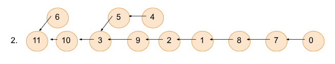
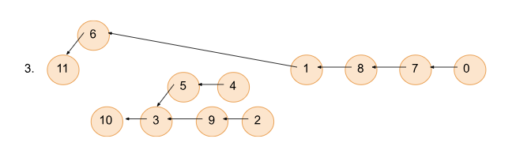
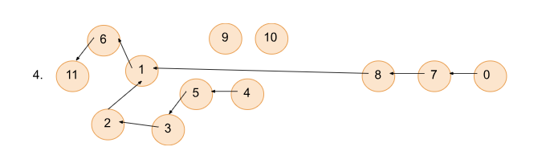
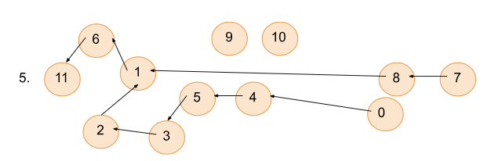
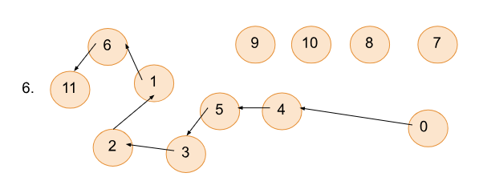
void do_fin(linked_list *strt,linked_list *result,linked_list *result_arr,linked_list *strt_arr,int n){ //do the updates
linked_list *tmp_re=result,*tmp_strt=strt->next;
int non_used_assigned=0;
for(int i=0;i<n-1;i++){
if((strt_arr[i].num==-1)&&(result_arr[i].num!=-1)){ //if have non used nodes, and what their next is not -1
non_used_assigned=1; // have assign non used nodes =1
strt_arr[i].num=result_arr[i].num; //assign all non used nodes to their right next node
}
}
if(non_used_assigned){
tranverse(strt_arr,n); //if have update, print out
}
while(1){
bool non_release_need_count=false;
if(strt_arr[tmp_re->node].num!=tmp_re->num){ //due to stack,start with the destiny node, if dif go in loop
strt_arr[tmp_re->node].num=result_arr[tmp_re->node].num; //connect now directly to the next node it should have
tranverse(strt_arr,n); //print out the updates
linked_list *tmp_store_tmp_strt=tmp_strt;
if(tmp_strt->node!=tmp_re->node){ //if have no non used nodes after the connection
while(tmp_strt->node!=tmp_re->node){ //from the strt list start, update till the node working on now
if((result_arr[tmp_strt->node].num!=-1)&&(strt_arr[tmp_strt->node].num!=result_arr[tmp_strt->node].num)){ // if all node to connect isn't all to -1
non_release_need_count=true; //need to update
break;
}
tmp_strt=tmp_strt->next;
}
tmp_strt=tmp_store_tmp_strt; //point tmp_strt back
if(non_release_need_count){ // if need update
while(tmp_strt->node!=tmp_re->node){ //update all between strt_arr to now
strt_arr[tmp_strt->node].num=result_arr[tmp_strt->node].num;
tmp_strt=tmp_strt->next;
}
tranverse(strt_arr,n); //print out the new updates
}
}
}
if(tmp_re->node==0){ //if now is start node break out
bool all_same=true;
for(int i=0;i<n;i++){ //check if all same
if(strt_arr[i].num!=result_arr[i].num){
all_same=false;
strt_arr[i].num=result_arr[i].num;
}
}
if(!all_same){ //if not all same, fix it and print out
tranverse(strt_arr,n);
}
break;
}
tmp_re=tmp_re->next; //go to next (the node before now)
}
}
3. 結果#
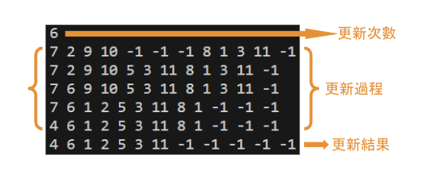
//main
printf("%d\n",(count_fin(strt,result,result_arr,strt_arr,n))); //print out the step num
tranverse(strt_arr,n);
if(!(compare(strt,result))){ //if two list not same -> update
do_fin(strt,result,result_arr,strt_arr,n); // do updates
}
//function
void tranverse(linked_list *strt_arr,int n){ //print out arr
for(int i=0;i<n;i++){
if(i!=n-1){
printf("%d ",(strt_arr)[i].num);
}else{
printf("%d\n",(strt_arr)[i].num);
}
}
}